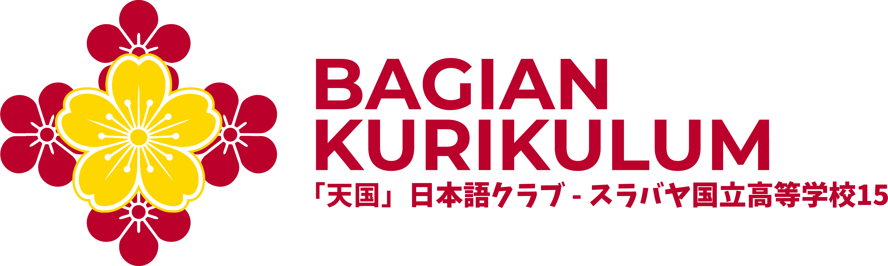

カリキュラム
Menjaga isi pembelajaran
Menyusun dan merawat materi belajar klub: silabus Kelas Reguler dan Advance, Panduan Mengajar, serta sample ujian.
- Dipimpin
- Koordinator Kurikulum
- Kontrol sebagian
- Pelatih/Sensei
- Logo
- Sakura kuning besar di tengah, dikelilingi empat bunga merah di keempat sisinya.